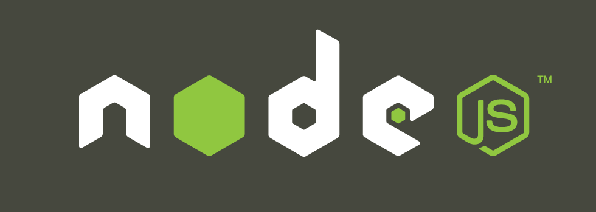

"Node.js is a platform built on Chrome's JavaScript runtime for easily building fast, scalable network applications. Node.js uses an event-driven, non-blocking I/O model that makes it lightweight and efficient, perfect for data-intensive real-time applications that run across distributed devices." - Quelle: nodejs.org/
Das war's auch schon!
Immer für euch da: olivier.tille@springer.com
Download unter: github.com/oliviernt/html5-hottopic
Erstellt mit: deck.js
/
#